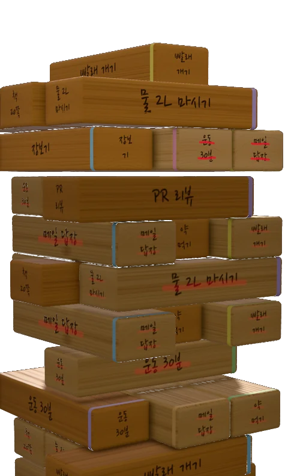
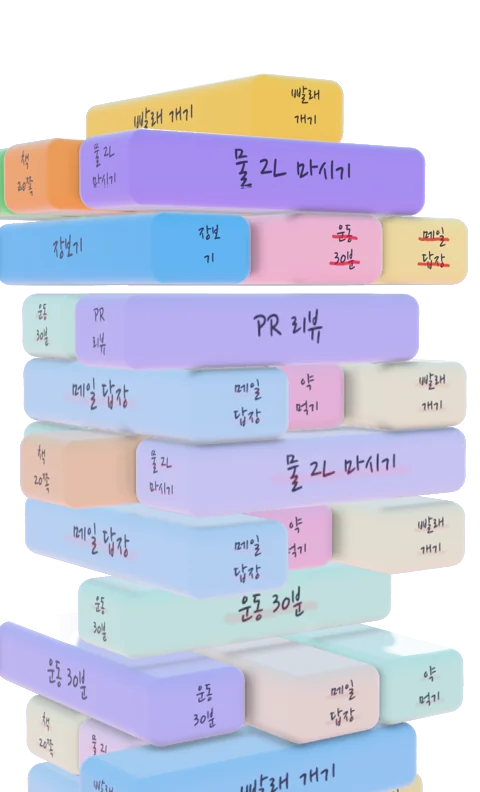
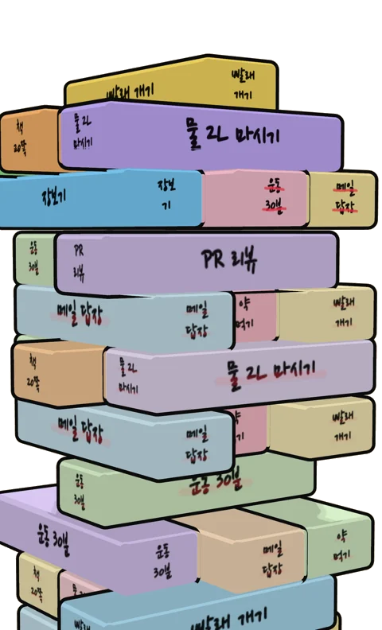

30초면 충분해요
출근길에, 점심 먹고, 퇴근 전에. 잠깐 열어서 올리고 그으면 끝이에요.
-
할 일을 올려요
열두 글자 안쪽으로 한 줄. 오늘 묶음 맨 위에 블록으로 얹혀요.
-
끝내면 그어요
블록을 누르면 네 면에 줄이 그어지고, 블록이 제자리로 쑥 들어가요.
-
하루가 넘어가면 탑이 돼요
오늘 묶음은 그대로 굳고, 내일 묶음이 그 위에 쌓여요.
끝내면, 긋는다
완료 버튼이 아니에요. 펜이 날아와 블록 네 면에 줄을 그어요. 하루에도 몇 번씩 여는 앱이라, 그 한 번이 손맛이어야 했어요.
하루가 쌓이면
오늘 할 일이 맨 위에 쌓여요
앱을 열면 오늘 묶음이 먼저 보여요. 남은 일은 삐져나와 있어서, 뭐가 남았는지 한눈에 들어와요.
아래로 내리면 어제예요
탑은 날짜 단위로 딱딱 걸려요. 지난 날은 고칠 수 없어요. 그날의 기록이니까요.
한 주를 다 끝내면 깃발이 꽂혀요
그 주의 블록을 전부 그으면 탑 꼭대기에 깃발이 올라가요. 몇 주째 이어 가는지도 세어 줘요.
미룬 일은 늙어요
못 끝낸 일은 그날 자리에 남고, 오늘 묶음에 다시 올라와요. 며칠째 미루면 먼지와 이끼가 앉아요. 그으면 털려요.
탑의 모양은 세 가지예요
같은 할 일도 룩에 따라 다르게 보여요. 설정에서 바꿔요.



펜마다 긋는 맛이 달라요
색만 다른 펜은 없어요. 펜이 바뀌면 선의 느낌이 바뀌어요.
여섯 자루 중 두 자루는 처음부터 쓸 수 있어요. 나머지 네 자루는 한 자루에 ₩1,500, 네 자루 묶음은 ₩4,400이에요. 한 번 사면 계속 써요.
쌓다 보면 쓰게 되는 것들
내일을 미리 쌓아요
저녁이 되면 오늘 위로 내일 할 일이 반투명하게 떠 있어요. 하루가 넘어가면 내려앉아요.
앱을 열지 않고 올려요
다른 앱의 공유, 빠른 설정 타일, 아이콘 길게 누르기. 보던 화면 위에 작은 카드 하나만 떠요.
달력으로 그날에 바로 가요
탑을 한참 내리지 않아도 돼요. 날짜를 고르면 그 묶음으로 넘어가고, 며칠째 이어 가는지도 보여요.
크게 봐도, 귀로 들어도 돼요
글자를 두 배로 키워도, TalkBack으로 들어도 똑같이 쓸 수 있어요. 3D가 버거운 폰에서는 같은 내용을 목록으로 보여 줘요.
광고와 가입, 가격
광고가 없어요.
가입도 없어요.
쌓기와 긋기는 무료예요.
계정을 만들지 않고, 개인정보를 수집하지 않아요. 할 일은 폰에 저장돼요. 인터넷이 없어도 쌓고 그을 수 있어요. 돈을 받는 건 펜 네 자루뿐이에요.
시작하기 전에 궁금한 것들
정말 무료인가요?
할 일 올리기, 긋기, 지난 날 보기는 모두 무료이고 광고도 없어요. 유료는 펜 네 자루뿐이에요. 한 자루에 ₩1,500, 네 자루 묶음은 ₩4,400이에요.
가입해야 하나요?
아니요. 계정이 없어요. 받아서 바로 써요.
못 끝낸 일은 어떻게 되나요?
그날 자리에 끝내지 못한 채로 남아요. 그리고 같은 일이 오늘 묶음에 새 블록으로 다시 올라와요.
지난 날을 고칠 수 있나요?
고칠 수 없어요. 지난 날은 그날의 기록으로 그대로 남아요. 고치기와 버리기는 오늘 묶음에서만 돼요.
하루는 몇 시에 넘어가나요?
기본은 새벽 4시예요. 설정에서 바꿀 수 있어요.
인터넷이 없어도 되나요?
네. 펜을 사거나 구매를 복원할 때만 인터넷이 필요해요.
iPhone에서도 쓸 수 있나요?
지금은 Android만 돼요.